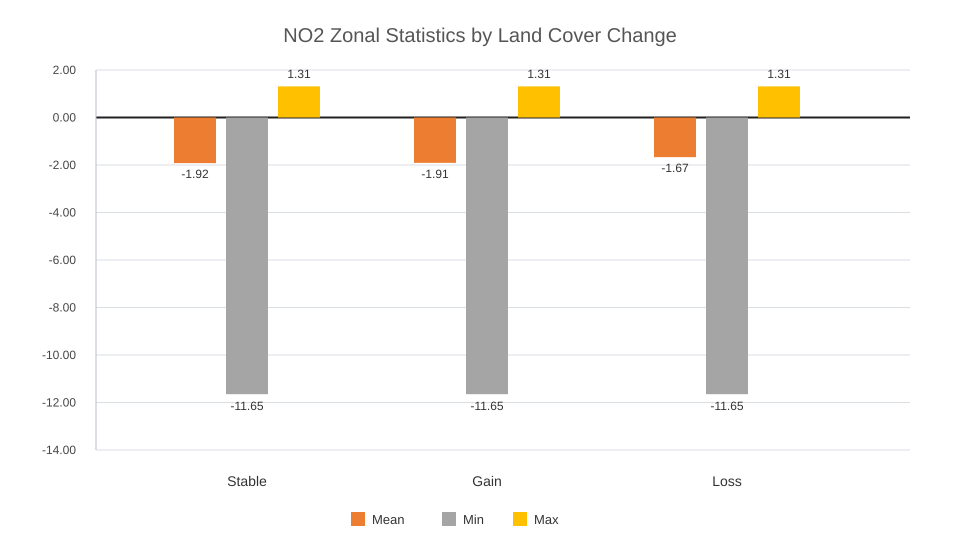

Results
Project outputs for pollution, land cover change, and population exposure.
Air Pollution Analysis
The air pollution analysis was carried out using CAMS atmospheric data for Bulgaria. The processing workflow produced four main outputs for each pollutant (NO2, PM2.5 and PM10).
The first result is the December 2023 concentration map, representing the spatial distribution of pollutant concentrations during the selected month. This layer provides a snapshot of short-term air quality conditions and highlights local pollution hotspots.
The second result is the 2023 Annual Mean Concentration (AMC) map, generated by averaging all monthly values for the year. This layer represents long-term pollution exposure and provides a more stable indicator of overall air quality conditions across Bulgaria.
The third result is the Concentration Classification map, where annual mean concentrations were grouped into classes according to predefined thresholds. This classification simplifies the interpretation of pollution levels and facilitates comparison between different regions.
The fourth result is the Annual Mean Absolute Change (AMAC) map between 2021 and 2023. This layer identifies areas where pollutant concentrations increased or decreased over time, allowing the assessment of recent air quality trends and spatial changes.
Together, these outputs provide a comprehensive overview of the spatial distribution, intensity, classification, and temporal evolution of air pollution in Bulgaria.
Land Cover Change Analysis
Land cover change was analysed using the Copernicus Land Cover Classification (LCC) products for 2021 and 2023. The objective was to investigate the dynamics of the three assigned land cover classes in Bulgaria: Crops, Built-up Areas, and Trees, and to identify the main transitions occurring during the study period.
The primary result is the Land Cover Change (LCC) map, which classifies each pixel as Stable, Gain, or Loss for each analysed land cover class. These maps provide a direct visualization of spatial changes and highlight areas where agricultural land, urban areas, and tree cover expanded or contracted between 2021 and 2023.
A second spatial output is the Zonal Statistics map, which summarizes land cover change patterns at the administrative-unit level. By aggregating the results for Crops, Built-up Areas, and Trees, this layer enables regional comparisons and helps identify areas experiencing the most significant land cover dynamics.
To support the spatial analysis, two statistical products were generated. The first is a Zonal Statistics by LCC chart, presenting the mean, minimum, and maximum values for Stable, Gain, and Loss categories. This chart allows a quantitative comparison of change intensity among the three land cover classes and across different administrative units.
The second is a Land Cover Change Statistical Table, summarizing the proportion of Stable pixels together with the three most important sources of Gain and the three most important destinations of Loss for each analysed land cover class. Pixel percentages were calculated using the original raster geometry in EPSG:4326, while area calculations were performed in the equal-area projection EPSG:3035 to ensure accurate area measurements. This approach provides both consistent pixel-based statistics and reliable estimates of land cover extent.
Together, these outputs provide insight into the magnitude, spatial distribution, and dominant transition processes affecting Crops, Built-up Areas, and Trees in Bulgaria between 2021 and 2023. The results help identify areas of agricultural expansion or decline, urban growth, and changes in tree cover, supporting a better understanding of recent land use and environmental dynamics.
NO2
Zonal Statistics and Statistical Table

| Indicator | Pixel Percentage (CRS 4326) | Area Percentage (CRS 3035) | Category |
|---|---|---|---|
| Baseline | |||
| Stability (Persistence) | 94.70% | 94.71% | N/A (Baseline) |
| Source of Gain | |||
| Primary source of gain | 51.30% | 51.18% | crops(5) |
| Secondary source of gain | 31.20% | 31.32% | rangeland(11) |
| Third source of gain | 15.40% | 15.34% | tree(2) |
| Destination of Loss | |||
| Primary destination of loss | 47.20% | 47.30% | rangeland(11) |
| Secondary destination of loss | 28.80% | 28.69% | crops(5) |
| Third destination of loss | 22.20% | 22.21% | tree(2) |
PM2.5
Zonal Statistics and Statistical Table
| Indicator | Pixel Percentage (CRS 4326) | Area Percentage (CRS 3035) | Category |
|---|---|---|---|
| Baseline | |||
| Stability (Persistence) | 95.75% | 95.74% | N/A (Baseline) |
| Source of Gain | |||
| Primary source of gain | 64.84% | 64.95% | Rangeland (11) |
| Secondary source of gain | 26.31% | 26.19% | Trees (2) |
| Third source of gain | 6.55% | 6.56% | Built Area (7) |
| Destination of Loss | |||
| Primary destination of loss | 59.23% | 59.34% | Rangeland (11) |
| Secondary destination of loss | 31.95% | 31.85% | Trees (2) |
| Third destination of loss | 7.99% | 7.99% | Built Area (7) |
PM10
Zonal Statistics and Statistical Table

| Indicator | Pixel Percentage (CRS 4326) | Area Percentage (CRS 3035) | Category |
|---|---|---|---|
| Baseline | |||
| Stability (Persistence) | 94.93% | 94.93% | N/A (Baseline) |
| Source of Gain | |||
| Primary source of gain | 62.16% | 58.17% | Rangeland (code11) |
| Secondary source of gain | 32.95% | 30.55% | Crops (code5) |
| Third source of gain | 3.33% | 3.10% | Built (code7) |
| Destination of Loss | |||
| Primary destination of loss | 84.36% | 81.88% | Rangeland (code11) |
| Secondary destination of loss | 12.88% | 12.35% | Crops (code5) |
| Third destination of loss | 1.84% | 1.77% | Built (code7) |
Population Analysis
The population analysis combines population distribution data with pollutant concentration data in order to evaluate potential exposure to air pollution.
The first output is a Bivariate Map, which simultaneously represents pollution concentration classes and population classes. By combining these two variables, the map identifies areas where high pollution levels coincide with high population density, highlighting potential exposure hotspots.
The second output is a Population Exposure Chart Layer, generated from zonal statistics and concentration classes. The chart summarizes the distribution of population across different pollution categories, making it possible to compare exposure levels between concentration classes.
A complementary Population Exposure Table provides quantitative statistics describing the relationship between population distribution and pollutant concentration. This table supports the interpretation of exposure patterns and helps identify areas where large numbers of people may be affected by elevated pollution levels.
Together, these outputs allow the assessment of both environmental conditions and human exposure, supporting the identification of areas where air pollution may have the greatest potential impact on the population.
NO2
Population Exposure Output

PM2.5
Population Exposure Output
PM2.5 population result is reserved for the corresponding output.
PM10
Population Exposure Output